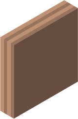
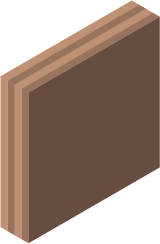

قایمباشک
در ابتدا، ببراس پشت یکی از درهای تیره پنهان شده است.
در هر گام شما میتوانید یک در دلخواه (مستقل از رنگ) را باز کنید.
هشدار، بعد از بسته شدن یک در، ببراس یا یک خانه به راست یا یک خانه به چپ حرکت می کند.
برای گرفتن امتیاز کامل، ببراس را با گام پیدا کنید.


 
